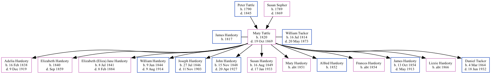

Mary Ann Tucker (née Tuttle) 1820 - 1869
[ Home ] | [ Surnames Index ] | [ Family History ]The child of Peter Tuttle and Susan Sopher, was born in Ohio in 18201 was married twice - to James Hardesty (on Jun 10, 1839 in Fountain, Indiana, USA) William Tucker (on Apr 22, 1862 in Louisa, Iowa, USA). She had 13 children: Adelia Adaline, Elizabeth Caroline, Elizabeth (Eliza) Jane, William Marion, Joseph Paul, John Colman, Susan Mariah, Mary J, Alfred S, Frances E, James Franklin and Lizzie P with James; and Daniel Webster with William. In 1880, she was living in Highland, Muskingum, Ohio, USA1.
She died on Oct 19, 1869 in Columbus Junction, Iowa (pluro pneumonitis).
Parents
- Peter was born in 1790
- Susan was born in 1789
Children
- Adelia Adaline was born on Feb 16, 1838
- Elizabeth Caroline was born in 1840
- Elizabeth (Eliza) Jane was born on Jul 8, 1841
- William Marion was born on Jun 9, 1844
- Joseph Paul was born on Jul 27, 1846
- John Colman was born on Nov 15, 1848
- Susan Mariah was born on Aug 16, 1849
- Mary J was born c. 1851
- Alfred S was born in 1852
- Frances E was born c. 1854
- James Franklin was born on Oct 13, 1854
- Lizzie P was born c. 1866
- Daniel Webster was born on Mar 4, 1864
Citations
- 1880 United States Federal Census Ancestry.com Operations Inc (Age: 60; Marital Status: Married; Relation to Head of House: Wife)
Family Tree
Data (GEDCOM) maintained by Jay Weston Hannah, Omaha, Nebraska, USA.
Website generated by ged2site. Last updated on Jun 18, 2024.